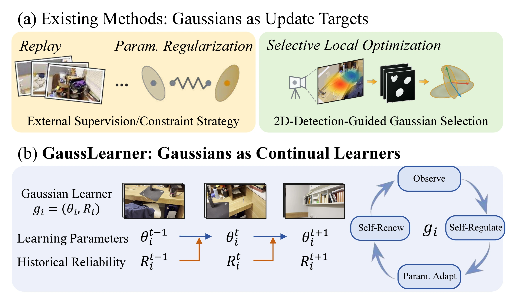
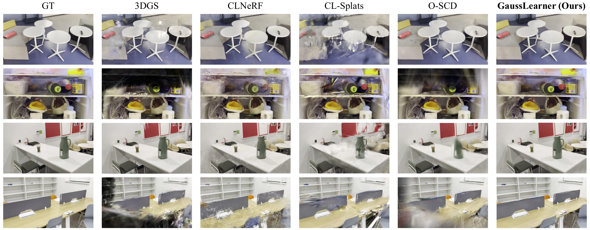
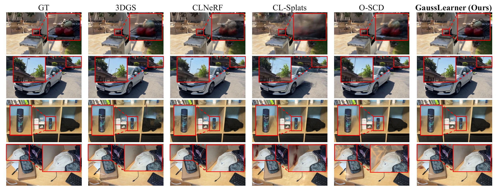
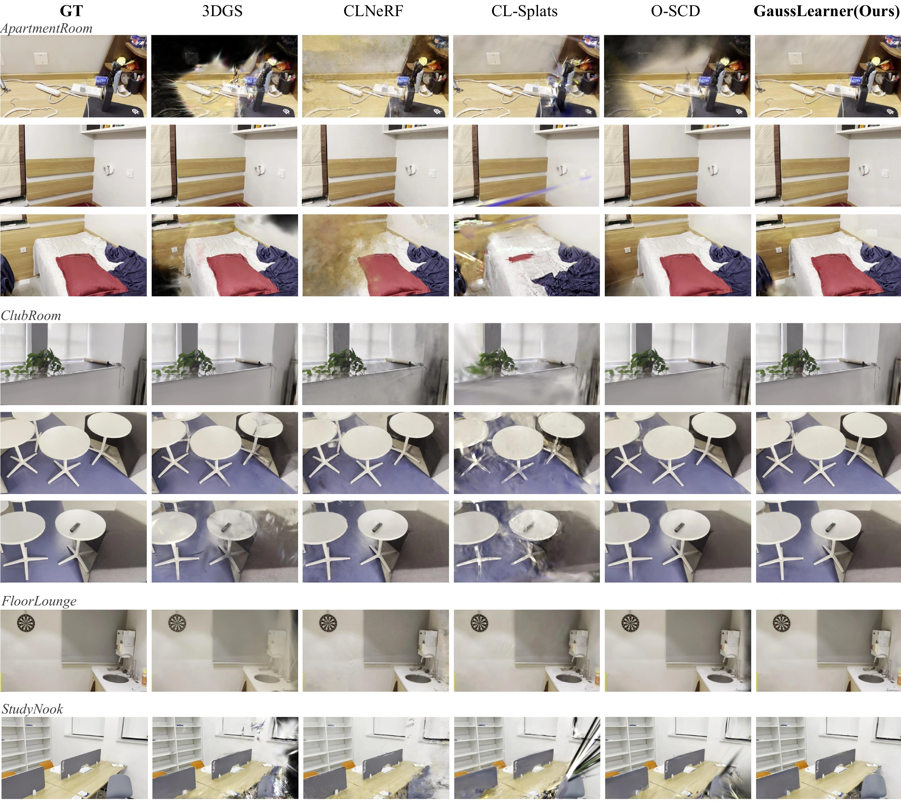
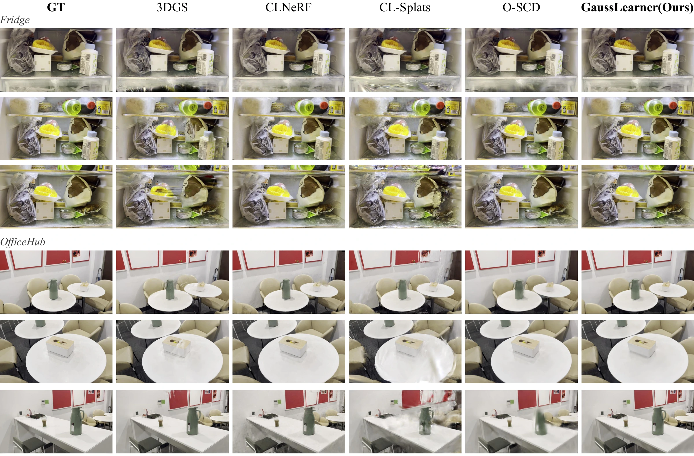
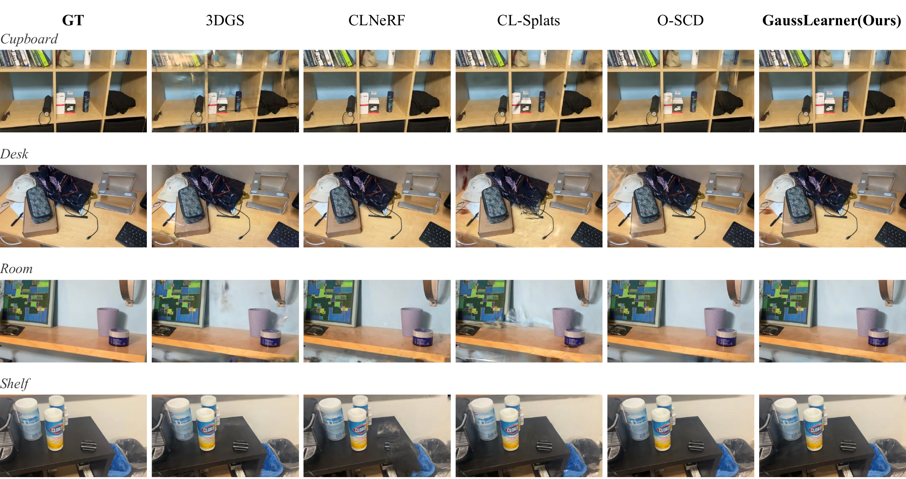
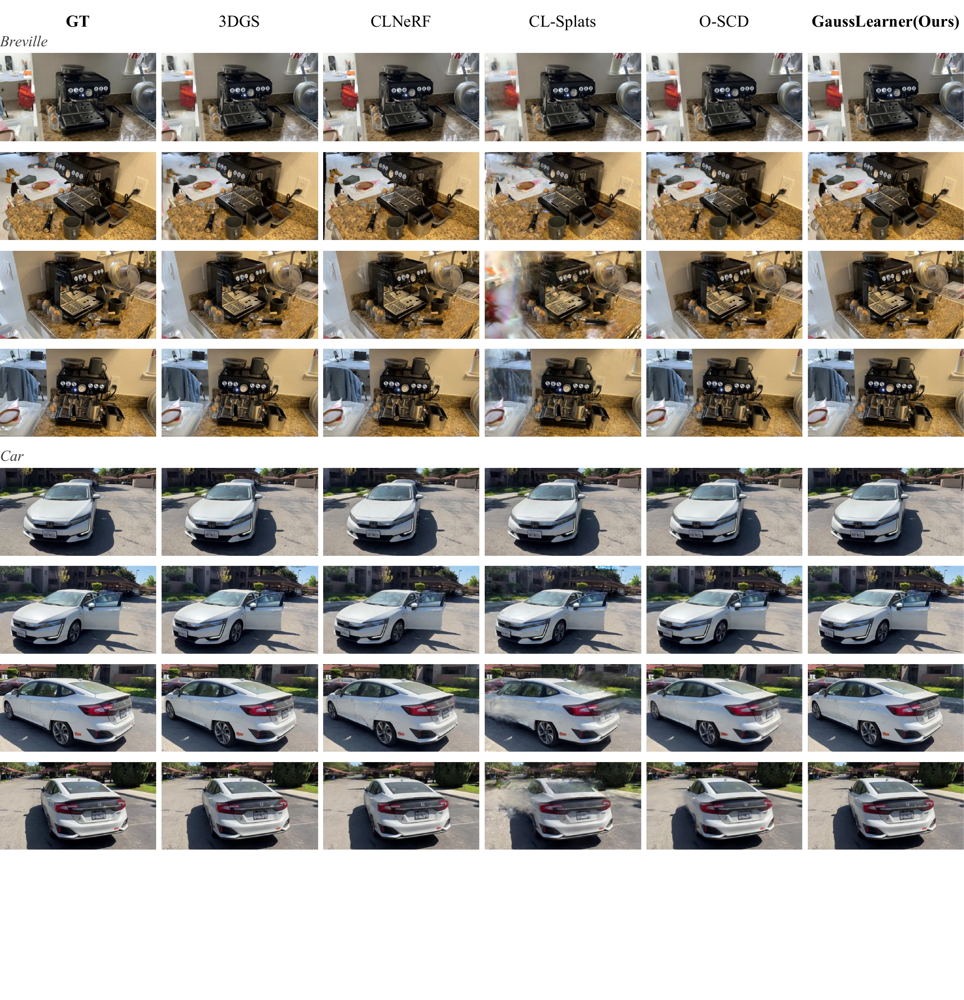
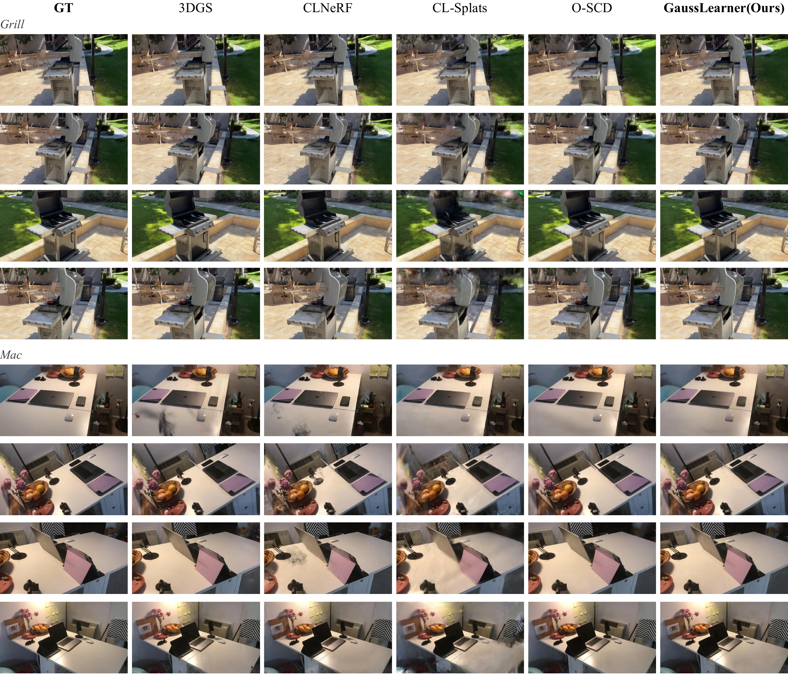
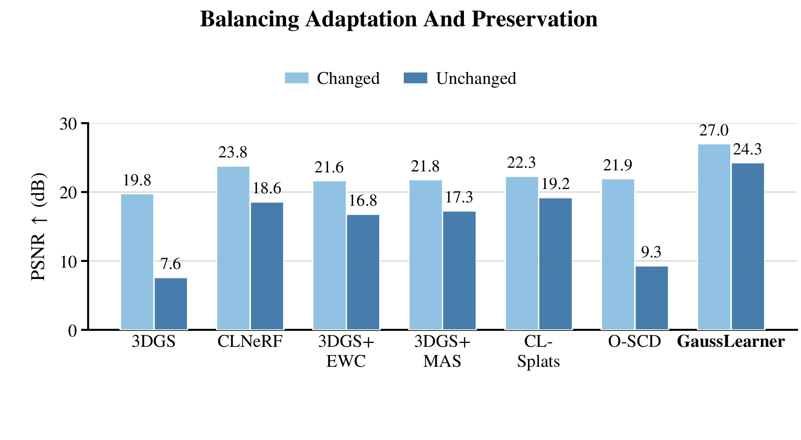

Abstract
Continual learning of 3D Gaussian fields aims to maintain faithful reconstructions of the evolving world. However, directly fine-tuning an existing Gaussian field on new observations can cause catastrophic forgetting of previously reconstructed content. To address this challenge, existing methods employ selective local optimization, replay, or parameter regularization, yet still struggle to balance adaptation to scene changes with preservation of still-valid content. Our key insight is to view 3D Gaussian primitives themselves as self-regulating continual learners. Based on this insight, we introduce GaussLearner, which equips each Gaussian with a closed continual-learning loop connecting observation, self-regulation, and adaptation at the primitive level. At each novel state, GaussLearner first attributes pixel-wise inconsistencies in current observations to their contributing Gaussians. Each Gaussian then self-regulates through a learning weight that balances current observations against cross-state reliability. This weight governs both Gaussian parameter adaptation and optimizer memory refresh. As current inconsistencies are resolved, the adaptation outcome renews each Gaussian's reliability for future states. The resulting field is a globally coupled population of locally self-regulating learners. Across scenes from CL-Splats, WAT, and our CL-3D dataset, GaussLearner improves average PSNR by 3.41 dB over the strongest baseline. On CL-3D, it achieves the best reconstruction quality on both changed and unchanged views.
Method


![Framework of GaussLearner. Each Gaussian acts as a stateful continual learner with scene parameters and cross-state reliability. At each scene state, pixel-wise inconsistencies in current observations are attributed to their contributing Gaussians. Each Gaussian then self-regulates through a per-Gaussian learning weight that balances current observations against cross-state reliability. This weight governs both parameter adaptation and optimizer-memory refresh. Cross-state reliability is updated at state boundaries using resolved pressure and final support. The resulting field is a globally coupled population of locally self-regulating continual learners.](assets/figures/framework.webp)
Qualitative Results




Additional Qualitative Comparisons










Quantitative Results
| Method | ClubRoom | FloorLounge | Fridge | OfficeHub | StudyNook | ApartmentRoom | ||||||
|---|---|---|---|---|---|---|---|---|---|---|---|---|
| PSNR ↑ | SSIM ↑ | PSNR ↑ | SSIM ↑ | PSNR ↑ | SSIM ↑ | PSNR ↑ | SSIM ↑ | PSNR ↑ | SSIM ↑ | PSNR ↑ | SSIM ↑ | |
| 3DGS | 19.00 | 0.732 | 20.02 | 0.837 | 20.16 | 0.762 | 25.28 | 0.831 | 9.75 | 0.605 | 16.48 | 0.655 |
| CLNeRF | 22.33 | 0.833 | 25.51 | 0.920 | 24.95 | 0.831 | 26.23 | 0.881 | 21.49 | 0.809 | 20.87 | 0.769 |
| 3DGS + EWC | 19.88 | 0.793 | 22.90 | 0.933 | 24.61 | 0.856 | 24.96 | 0.856 | 20.64 | 0.863 | 17.21 | 0.762 |
| 3DGS + MAS | 20.13 | 0.796 | 24.25 | 0.940 | 24.51 | 0.856 | 25.08 | 0.867 | 20.67 | 0.863 | 17.15 | 0.764 |
| CL-Splats | 20.40 | 0.827 | 28.14 | 0.941 | 21.91 | 0.773 | 20.62 | 0.818 | 23.39 | 0.877 | 20.37 | 0.760 |
| O-SCD | 20.78 | 0.820 | 21.89 | 0.866 | 22.43 | 0.825 | 25.45 | 0.864 | 13.61 | 0.731 | 17.71 | 0.758 |
| GaussLearner | 26.02 | 0.907 | 31.10 | 0.961 | 26.39 | 0.878 | 27.94 | 0.921 | 25.00 | 0.898 | 25.30 | 0.860 |
| Method | Cupboard | Desk | Room | Shelf | ||||
|---|---|---|---|---|---|---|---|---|
| PSNR ↑ | SSIM ↑ | PSNR ↑ | SSIM ↑ | PSNR ↑ | SSIM ↑ | PSNR ↑ | SSIM ↑ | |
| 3DGS | 25.69 | 0.918 | 28.32 | 0.875 | 20.93 | 0.725 | 26.52 | 0.914 |
| CLNeRF | 30.21 | 0.916 | 29.78 | 0.860 | 29.92 | 0.937 | 22.48 | 0.867 |
| 3DGS + EWC | 30.59 | 0.954 | 27.68 | 0.884 | 21.05 | 0.731 | 29.64 | 0.939 |
| 3DGS + MAS | 30.89 | 0.956 | 27.51 | 0.883 | 21.09 | 0.732 | 29.24 | 0.940 |
| CL-Splats | 29.13 | 0.940 | 24.17 | 0.831 | 26.82 | 0.909 | 26.78 | 0.906 |
| O-SCD | 31.05 | 0.957 | 30.24 | 0.900 | 32.88 | 0.966 | 29.70 | 0.943 |
| GaussLearner | 32.62 | 0.963 | 31.63 | 0.903 | 33.43 | 0.967 | 30.05 | 0.943 |
| Method | Breville | Car | Grill | Mac | ||||
|---|---|---|---|---|---|---|---|---|
| PSNR ↑ | SSIM ↑ | PSNR ↑ | SSIM ↑ | PSNR ↑ | SSIM ↑ | PSNR ↑ | SSIM ↑ | |
| 3DGS | 30.60 | 0.942 | 27.80 | 0.871 | 27.46 | 0.866 | 31.02 | 0.949 |
| CLNeRF | 29.20 | 0.870 | 22.54 | 0.590 | 24.13 | 0.675 | 28.46 | 0.917 |
| 3DGS + EWC | 30.35 | 0.942 | 27.27 | 0.851 | 27.28 | 0.869 | 31.33 | 0.952 |
| 3DGS + MAS | 30.19 | 0.939 | 27.19 | 0.847 | 26.96 | 0.864 | 31.30 | 0.951 |
| CL-Splats | 22.52 | 0.837 | 22.70 | 0.769 | 19.08 | 0.721 | 25.87 | 0.904 |
| O-SCD | 30.70 | 0.937 | 27.29 | 0.866 | 26.13 | 0.845 | 30.28 | 0.946 |
| GaussLearner | 31.57 | 0.940 | 28.33 | 0.871 | 27.14 | 0.862 | 31.38 | 0.952 |


Citation
@misc{linghu2026gausslearner,
title = {GaussLearner: 3D Gaussian Primitives as Self-Regulating Continual Learners},
author = {Gaoxiang Linghu and Haonan Zhou and Xuanhe Liu and Weili Xu and
Kaiyue Zhou and Jun Xiao and Gaoang Wang},
year = {2026}
}